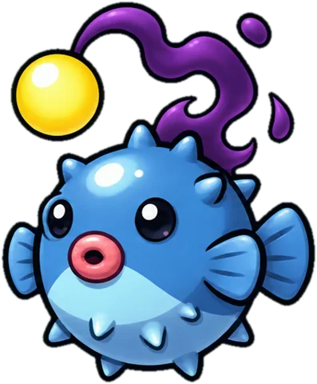

 ElectricPoison
ElectricPoisonTap a stage to read its story.
Sparkub is a round little blue fish that bobs through the dark waterways of Storm Spire with a single golden glowing orb floating above its head like a miniature lighthouse. A thin purple swirl drifts in its wake - barely poisonous at this stage, more like a gentle warning smell - and it blinks its wide eyes at every tunnel junction as if uncertain of its route. It feeds on tiny cave organisms that are themselves bioluminescent, and on full nights the entire cave pool where Sparkub sleeps glows faintly gold.
Field note: The golden orb above Sparkub's head bobs up when it is curious and droops flat to its head when it is frightened.
Shadow Caves. Sparkub and its family are found in the Shadow Caves. See everyone who lives there.
Share a Bond Food that matches its types to become friends. Sparkub loves:
A Bond Food is not a trick. It joins your spirit with the Kimuro's spirit, and only when it chooses you.
Print the Kimuro adventure packs: mazes, cards, a board game and Bond Mark medals.
See the printable packs